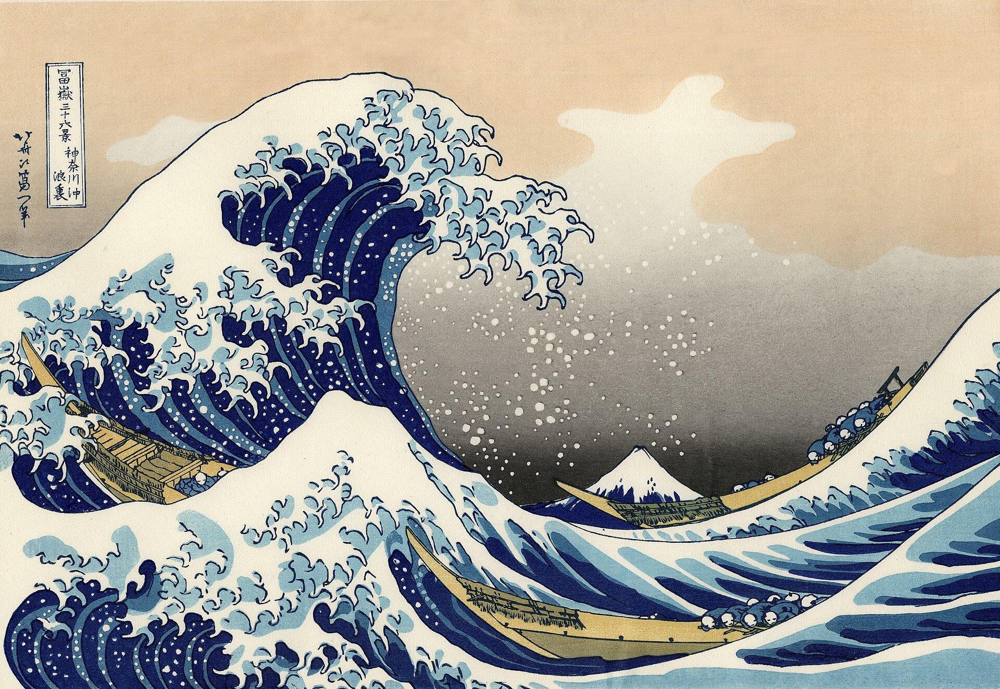

貳
Accommodation
住宿推荐
宿 — Where to Stay

选址理由 · 新宿到涩谷 5 分钟，到浅草 40 分钟，河口湖巴士直发，是全行程地理位置最均衡的住宿点。Oct 6–12 的住宿已通过 Airbnb 预订（HATAGO Shinokubo · 新大久保 · 6 人 7 晚 · 总价 RM 9,722.97）。

| 日期 | 住宿 | 备注 |
|---|---|---|
| Oct 5 日 | Henn na Hotel大鸟居站 | 22:30 羽田落地 · 京急线直达 ~10分 · 末班车 00:13 |
| Oct 6 – 12 | HATAGO ShinokuboAirbnb · 新大久保 · 已预订 | 7 晚主要行程 · 新宿 · 涩谷 · 浅草 · 河口湖 |
| Oct 13 日 | Henn na Hotel大鸟居站 | 返回同一酒店 · 准备翌日离境 |
| Oct 14 一 | ✈ 回 KL | 23:30 羽田起飞 · 提前 3 小时到机场 |